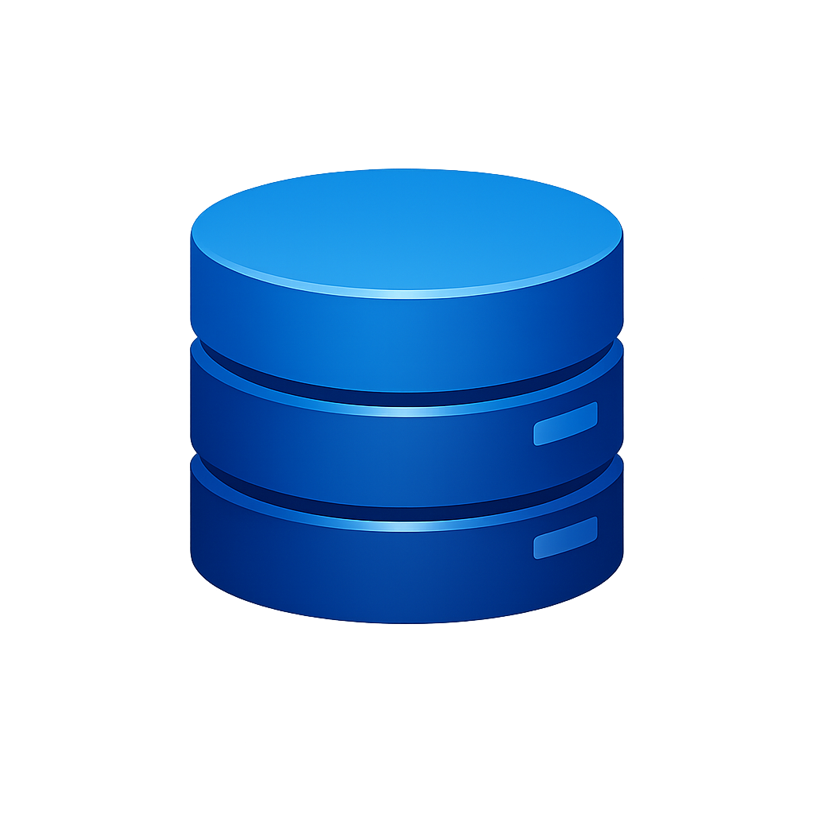
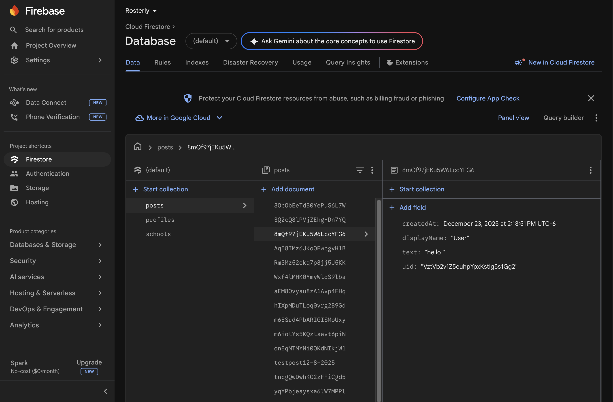
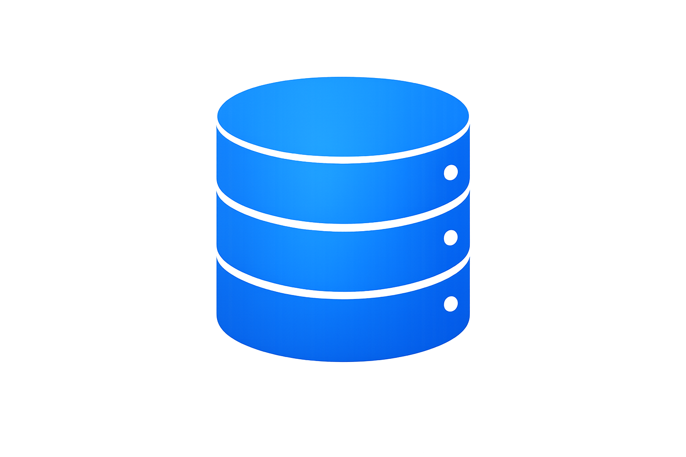
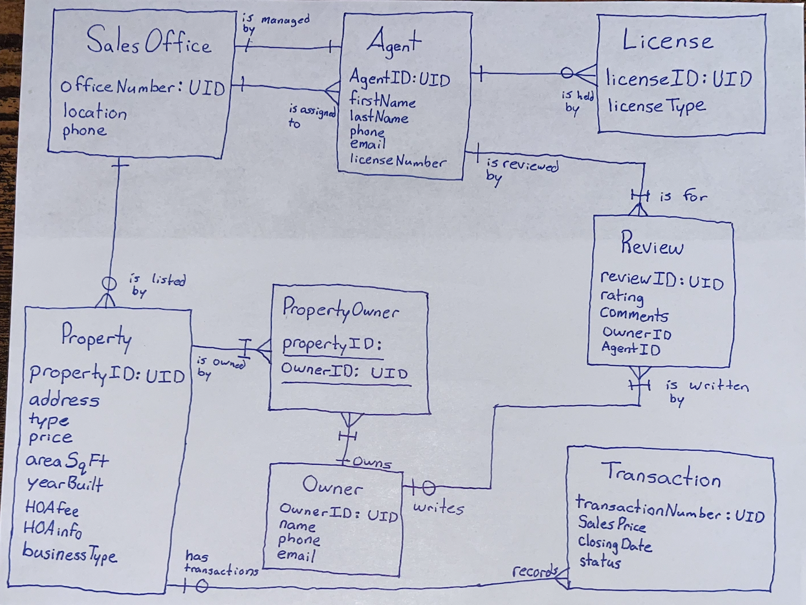

I have a decent amount of experience working with databases and database design. My experience can be demonstrated throughout the work I have done on personal projects, class projects, and as a Application Developer Intern at the Arkansas Department of Transportation.
I have had the oppoortunity to work with tools such as SSMS, Firebase, and DBeaver. While also being able to design databases with using schemas and entity flow charts.
Firebase Database Personal Project
In working to build a full-stack personal project, I decided to use Google's Firebase platfom for my database. I used it to store the data for my personal project, a social media platform, which included things such as user's posts, favorite sports teams, and other fields of data. Working with this platform also introduced me to other aspects such as API's, Authentication, and Database Security.


BINS-45003 & 30703 Projects
During the time of my Business Data Managment & System Development courses, I got to learn about databse design through creating database scehmas and different types of diagrams hands on. In both of these courese I commonly created Entity Relationship Diagrams, Relational Schemas, and other types of Data Flow Diagrams.
